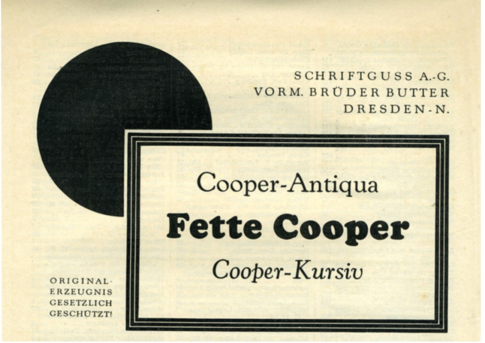
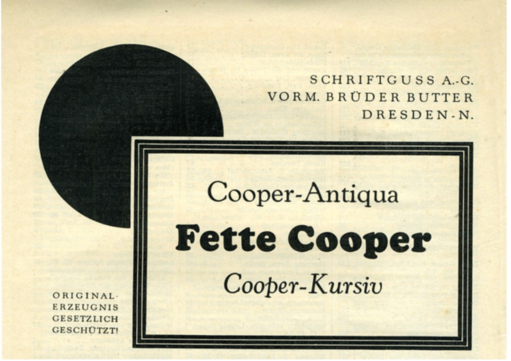

![a black and white advert for Cooper Black with the following text on it:
THE AMERICAN PRINTER for July 5. 1922
Cooper Black
Designed by Oswald CooperpeR
A dominant type face
A bold Roman that is a genuine design
It delivers the message with
the convincing force of
powerful expression
Write for Specimen Printeraft Illustrates
Showing Sizes 6 Point to 120 Point Font 8 Designs and 8 Tint Blocks
BARNHART BROTHERS & SPINDLER
CHICAGO • WASHINGTON, D.C. • DALLAS • SAINT LOUIS • KANSAS CITY • OMAHA • SAINT PAUL • SEATTLE](images/1922ad.jpg) 

History
Cooper Black is a renowned typeface with a rich history that dates back to the early 20th century. Designed by Oswald Bruce Cooper, it made its debut in 1922 as a bold and distinctive display typeface. Known for its unique and iconic characteristics, Cooper Black quickly gained popularity for its bold and friendly appearance. It was widely used in advertising, posters, and various printed materials, contributing to its status as a hallmark of vintage design. Over the decades, Cooper Black continued to evolve and adapt, with its timeless appeal making it a favorite choice for designers seeking a classic and nostalgic touch in their projects. Its prominent use in various cultural contexts and its continued relevance in contemporary design demonstrate its enduring legacy in the world of typography. Cooper Black remains a symbol of enduring design and continues to be cherished by designers and typographers for its bold and charismatic presence in the visual landscape.
Over the decades, Cooper Black continued to evolve and adapt, with its timeless appeal making it a favorite choice for designers seeking a classic and nostalgic touch in their projects. Its prominent use in various cultural contexts and its continued relevance in contemporary design demonstrate its enduring legacy in the world of typography. Cooper Black remains a symbol of enduring design and continues to be cherished by designers and typographers for its bold and charismatic presence in the visual landscape.
In Use
Cooper Black is used in


Guide
Cooper Black is used in
Game
Cooper Black is used in
Download
Cooper Black is used in